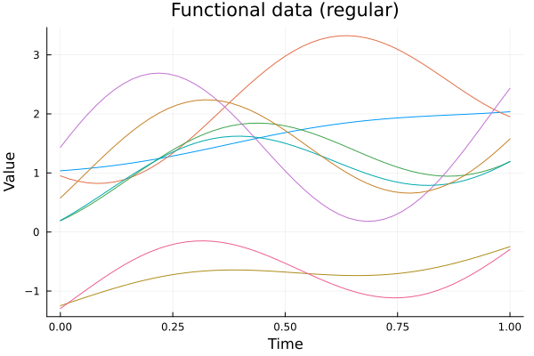
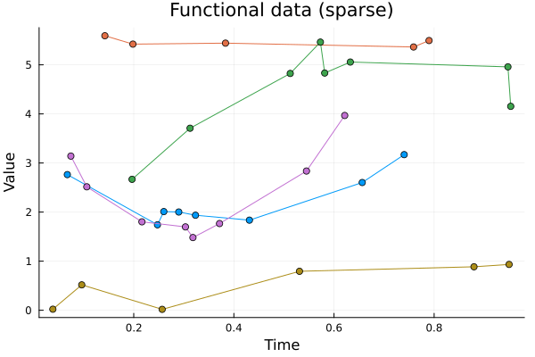
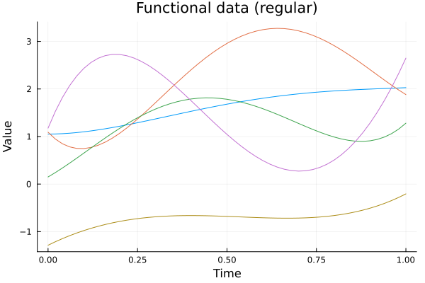
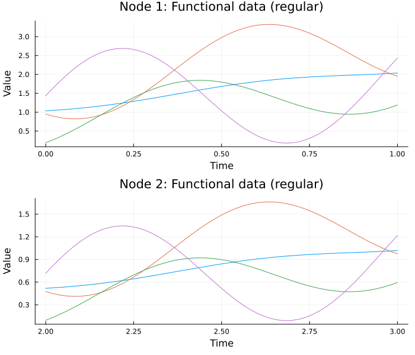
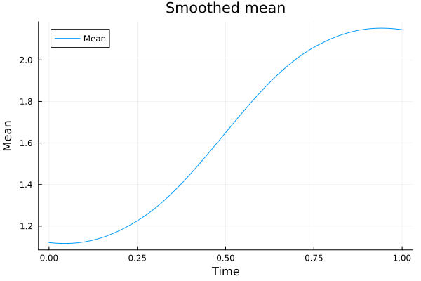
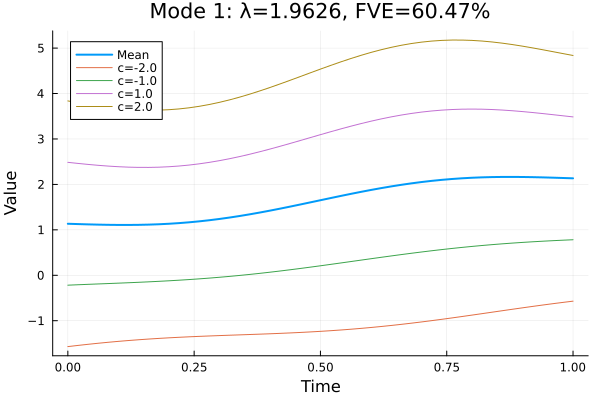
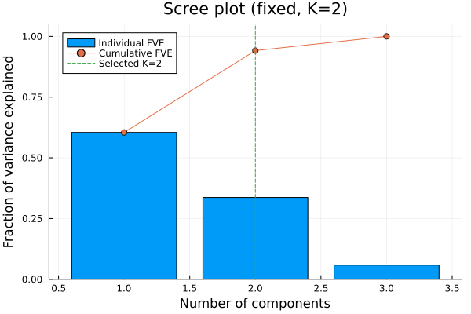
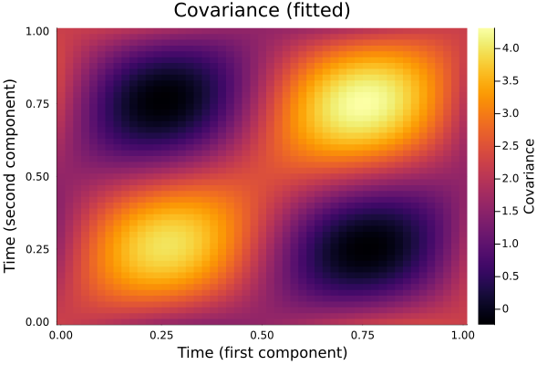
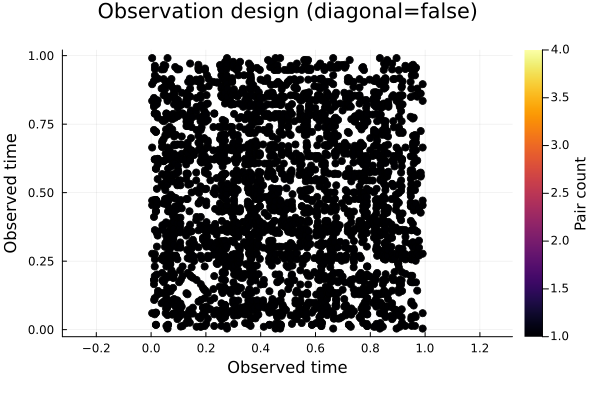
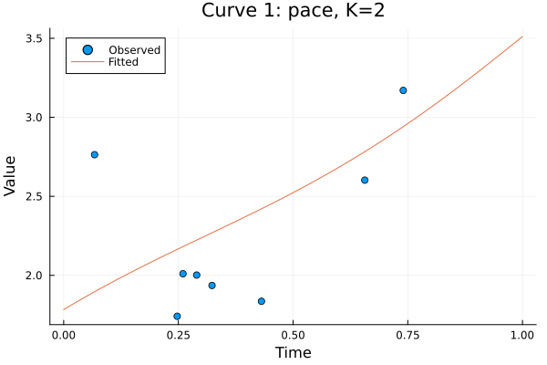

Plotting
Plot coordinates are available without loading a plotting library. The exported data functions return named tuples with copied arrays and recorded settings. RecipesBase supplies Plots.jl recipes; Plots is a docs-only dependency. Install and load Plots in your own plotting environment. Makie recipes are planned for a later milestone.
using FunctionalDataAnalysis
d = curve_data(fd; curves=1:5) # observed times and values per curve
s = scree_data(model) # full retained spectrum and selectioncurve_data never interpolates raw observations. Masked grid entries are absent, and irregular curves keep their own time vectors. A basis object is evaluated on 201 equally spaced domain points by default. Pass grid to curve_data to change this basis evaluation grid. In plot(basis_data), the corresponding keyword is evaluation_grid; grid retains its usual Plots meaning. Raw data reject a requested evaluation grid. Curve selection accepts an integer, an integer vector or range, a Boolean mask, or :all. Selection order is retained; empty and repeated selections throw.
Simulated examples
All figures below are generated when this page builds. The seed is fixed; none of the examples require R. These figures illustrate fitted objects and do not validate statistical coverage or recovery.
ENV["GKSwstype"] = "100" # headless GR for documentation builds
using FunctionalDataAnalysis, Random, Plots
import StatsAPI
grid = collect(range(0.0, 1.0; length=51))
functions = fourier_eigenfunctions((0.0, 1.0), 3)
dense = simulate_kl(Xoshiro(54), 60; mean=t -> 1 + t,
eigenfunctions=functions, eigenvalues=[2.0, 0.7, 0.2],
sampling=RegularSampling(grid)).data
model = StatsAPI.fit(FPCA, dense; ncomponents=2, maxK=3)
plot(dense; curves=1:8, legend=false)
Sparse curves have markers and lines through their observed points. These lines are a display convention, with no interpolated points in curve_data.
sparse = simulate_kl(Xoshiro(55), 60; mean=t -> 1 + t,
eigenfunctions=functions, eigenvalues=[2.0, 0.7, 0.2], noise_sd=0.2,
sampling=SparseSampling((0.0, 1.0), 5:9)).data
pace = StatsAPI.fit(FPCA, sparse; grid, ncomponents=2, maxK=3,
mean_bandwidth=0.3, covariance_bandwidth=0.4, noise_variance=0.04)
plot(sparse; curves=1:5, legend=false)
Basis data are evaluated explicitly for display. They have no observed-point design plot.
basis_data = to_basis(dense, MonomialBasis((0.0, 1.0), 4))
plot(basis_data; curves=1:5, evaluation_grid=grid, legend=false)
Multivariate data use one panel per node. Nodes may have different domains and representations. The same subject selection applies to every node.
mfd = MultivariateFunctionalData([dense,
GridFunctionalData(0.5 .* dense.values, grid .+ 2)])
plot(mfd; curves=1:4, legend=false, size=(700, 600))
mean_fit = StatsAPI.fit(SmoothedMean, dense; grid, bandwidth=0.25)
plot(mean_fit)
modesplot shows the mean and the four default mode curves. The title gives the eigenvalue and the component's individual FVE. Joint MFPCA and marginal multivariate FPCA use one panel per node. Pooled multivariate modes use the shared pooled eigenvalue, rather than each node's score variance.
modesplot(model, 1)
screeplot shows every positive eigenvalue retained up to the fit's cap, including unselected components. FVE uses this full retained spectrum. The vertical line shows selected K. The horizontal line appears only when the fit used an FVE threshold. A marginal multivariate fit has per-node scree panels; pooled and joint fits have a shared spectrum.
screeplot(model)
covariance_data returns matrix rows on grid1 and columns on grid2. The recipe arranges these axes for Plots, including rectangular cross-covariances. surface=:stored shows the estimated covariance; surface=:fitted uses its positive-semidefinite projection over all retained components, including those beyond selected K. Both surfaces are stored by FPCA; plotting does not rerun the eigendecomposition.
covplot(model; surface=:fitted)
For a three-dimensional view, use covplot(model; seriestype=:surface). The same recipe accepts SmoothedCovariance, CrossCovariance, and SmoothedCrossCovariance.
designplot(sparse)
design_data returns every ordered within-curve pair and its subject index, plus aggregated exact counts. The recipe plots the occupied pairs once, using count categories 1, 2, 3, and 4+. Diagonal pairs are omitted by default; request them with diagonal=true. Singleton curves contribute zero pairs under the default and one pair with the diagonal enabled. Empty pair arrays are valid. No dense-grid approximation or time binning is used.
fitplot(pace, 1)
Fitted paths reuse training scores and reconstruct. The points are copied original observations, including when a dense fit used presmoothing. fitplot(model, i; grid=newgrid) chooses a finite increasing reconstruction grid inside the fitted domain. Joint MFPCA uses node panels, with either a shared grid or a vector of node grids. Plotting does not run a new score solve.
Defaults and implementation choices
The source audit is in Comparison with fdapace.
| Setting | Default and source |
|---|---|
| Curves | :all, milestone 5 specification |
| Raw-data grid | nothing, observed points only, milestone 5 specification |
| Basis display grid | 201 equally spaced domain points, milestone 5 specification |
| Mean/mode grid | Stored fit grid, milestone 5 specification |
| Mode multipliers | (-2,-1,1,2), fdapace 0.6.0 shaded-envelope boundaries |
| Design diagonal | Excluded, fdapace 0.6.0 noDiagonal=TRUE |
| Design count display | 1, 2, 3, 4+, fdapace 0.6.0; exact counts remain in the data |
| Fitted-path grid and K | Stored grid(s) and selected K, fdapace 0.6.0 |
| Covariance view | :stored and seriestype=:heatmap, package display choices |
| Sparse markers | Circles for sampling_design(fd)==:sparse, package display choice |
| Node layout | One column of panels, package display choice; Plots attributes may override it |
Other choices left open by the specification: tuple fields use separate per-curve time/value vectors; multivariate results wrap per-node tuples in nodes; invalid or repeated curve indices throw; raw data reject evaluation grids; basis display grids require at least two increasing in-domain points. Mode curves replace fdapace's shaded polygons. Scree data expose the full retained spectrum and use nothing for inapplicable thresholds. Design data retain exact ordered pairs and uncapped counts without fdapace's optional dense-grid reduction. FPCA.training_data retains copied original data; dense FPCA also stores its full projected covariance, as PACE already did. Copied training observations use the fit's promoted numeric type. The design recipe uses the Plots color scale to respect backend themes and color overrides; it retains fdapace's count categories rather than its fixed base-R palette. These fields add storage proportional to the input and a grid-square matrix for dense fits. Plot results are plain named tuples, whose standard show displays their settings; no new fitted estimator is introduced.
API
Precomputed fitted-curve and mean uncertainty results also support band_data and bandplot. See Uncertainty for the covered targets and assumptions. Plotting bands never runs a new fit or bootstrap. Multivariate fitted bands use node panels, and coverage on mean-band plots selects among the types already computed.
FunctionalDataAnalysis.curve_data — Function
curve_data(fd; grid=nothing, curves=:all)Return copied plotting coordinates as (; grid, curves, times, values, design, representation). times and values contain one vector per selected curve, in the requested order. curves accepts an index, integer vector/range, Boolean mask, or :all (the task's default); empty or repeated selections throw.
Grid and irregular data return only observed points, without interpolation. Their grid keyword must be nothing; the result records the original grid for grid data and nothing for irregular data. Masked points are absent. Basis data are evaluated on a finite increasing grid inside their domain; the default is 201 equally spaced points, as specified for milestone 5. Multivariate data return (; nodes, curves), one result per node. A supplied grid is shared across basis nodes; use grid=nothing for mixed raw/basis data. No plotting library is needed.
curve_data(d::FPCADerivative; grid=nothing, curves=:all)
curve_data(d::MultivariateFPCADerivative; grid=nothing, curves=:all)Copied derivative curve coordinates from reconstruct(d). The default grid is stored on the fit. Multivariate results return one payload per node. No smoothing or score estimation is repeated. All derivative curves are drawn as paths, including curves reconstructed from sparse observations.
FunctionalDataAnalysis.mean_data — Function
mean_data(m::Union{SmoothedMean,FPCA,MFPCA,MultivariateFPCA})Return copied (; grid, values) for a smoothed mean or an FPCA training mean. Multivariate fits return (; nodes), one mean per node on its stored grid. No grid or smoothing choice is made.
mean_data(d::Union{FPCADerivative,MultivariateFPCADerivative})Copied mean derivative coordinates on the stored work grid; multivariate results return (; nodes). No resmoothing is performed.
FunctionalDataAnalysis.modes_of_variation — Function
modes_of_variation(fit, k; multipliers=(-2, -1, 1, 2))Return (; grid, mean, values, multipliers, component, eigenvalue, fve) for μ + c*sqrt(λ[k])*φ[k]. Columns of values follow multipliers; k must be a selected component. All arrays are copied. The default multipliers are the boundaries of fdapace 0.6.0 CreateModeOfVarPlot's shaded envelopes. This package draws their curves and the mean instead of filled envelopes.
MFPCA returns (; nodes) using the joint eigenvalue and each node's joint eigenfunction. Marginal MultivariateFPCA uses each node's own spectrum; pooled fits use the shared pooled spectrum (not the node score variances). fve uses the full retained spectrum up to the fit's cap, as in scree_data.
FunctionalDataAnalysis.scree_data — Function
scree_data(fit)Return (; components, eigenvalues, individual, cumulative, chosen, threshold, rule) over the full retained positive spectrum, including components beyond selected K. threshold is nothing for fixed K, AIC, or BIC; no threshold is invented. FVE is normalized after the fit's component cap, following fdapace 0.6.0. CreateScreePlot draws individual bars and a cumulative line; this package also exposes unselected components and the recorded selection. MFPCA uses its joint spectrum. Marginal MultivariateFPCA returns (; nodes); pooled fits return the shared spectrum. Arrays are independent copies.
FunctionalDataAnalysis.covariance_data — Function
covariance_data(x)
covariance_data(f::FPCA; surface=:stored)Return copied (; grid1, grid2, values, surface). Matrix rows correspond to grid1 and columns to grid2, including rectangular cross-covariances. Accepts SmoothedCovariance, SmoothedCrossCovariance, or exact dense CrossCovariance. Smoothers use surface=:smoothed; exact blocks use :stored.
FPCA defaults to its stored estimated surface (:stored, a package display choice). surface=:fitted returns the positive-semidefinite projection over all retained components up to maxK, including unselected components, as in fdapace 0.6.0's full fitted covariance used for CE scores. It does not refit or diagonalize a surface. Other symbols throw.
FunctionalDataAnalysis.design_data — Function
design_data(fd; diagonal=false)Return all ordered within-curve observed pairs as (; x, y, curves, grid, counts, diagonal). curves identifies the subject contributing each pair; grid is the sorted observed-time union. counts=(; x, y, values, display) aggregates coincident pairs in lexicographic order, with exact integer counts and display counts capped at four. Empty pair sets are retained as empty arrays.
The default excludes diagonal pairs, following fdapace 0.6.0 CreateDesignPlot(noDiagonal=TRUE). Its color legend uses 1, 2, 3, 4+; exact counts here are never capped. Set diagonal=true to include them. Grid data use only observed entries; irregular curves retain their own times. Multivariate data return (; nodes). Basis data have no observation design and throw. No resampling or dense-grid reduction is performed.
FunctionalDataAnalysis.fitted_curve_data — Function
fitted_curve_data(f::FPCA, i; grid=f.grid)
fitted_curve_data(f::MFPCA, i; grid=nothing)Return (; curve, observed, grid, values, ncomponents, method) with copied observed=(; times, values) and the selected-K training reconstruction. Original observations are retained even when dense fitting used presmoothing. The default work grid and selected K follow fdapace 0.6.0 CreatePathPlot. Reconstruction delegates to reconstruct, including its explicit piecewise-linear evaluation and grid validation; scores are not recomputed. MFPCA returns (; nodes, curve); grid=nothing uses each node's work grid, or pass a shared real vector or a vector of node grids as for reconstruct.
FunctionalDataAnalysis.modesplot — Function
modesplot(fit, k; multipliers=(-2, -1, 1, 2), kwargs...)Plot the mean and mode-of-variation curves from modes_of_variation. The default multipliers follow fdapace 0.6.0's envelope boundaries. Titles show the component, eigenvalue, and individual FVE. Multivariate fits have one panel per node. Load Plots.jl before calling; kwargs set plot attributes.
FunctionalDataAnalysis.screeplot — Function
screeplot(fit; kwargs...)Plot individual FVE bars and cumulative FVE, following fdapace 0.6.0 CreateScreePlot, using scree_data. Show selected K and the FVE threshold when applicable. All retained components are displayed. Load Plots.jl first. Plot attributes may be overridden with kwargs.
FunctionalDataAnalysis.covplot — Function
covplot(x; kwargs...)
covplot(f::FPCA; surface=:stored, kwargs...)Plot covariance_data as a heatmap, a package display default. Use seriestype=:surface for a surface plot. FPCA accepts surface=:fitted for the full retained positive-semidefinite projection. Load Plots.jl first; other keywords set plot attributes.
FunctionalDataAnalysis.designplot — Function
designplot(fd; diagonal=false, kwargs...)Plot observed time pairs using design_data. Diagonal pairs are excluded by default and color counts use 1, 2, 3, 4+, as in fdapace 0.6.0. Exact counts remain available in design_data. Multivariate data have one panel per node. Load Plots.jl first; kwargs override plot attributes.
FunctionalDataAnalysis.fitplot — Function
fitplot(fit, i; grid=nothing, kwargs...)Plot the original observations and selected-K reconstruction from fitted_curve_data. grid=nothing uses the fit's stored grid(s), following fdapace 0.6.0 CreatePathPlot. MFPCA has one panel per node. Load Plots.jl first; kwargs override plot attributes.
Derivative fits support curve_data(d; curves=:all, grid=nothing) and plot(d; curves=1:3) after loading Plots. They display reconstructed derivative paths, including for PACE fits. mean_data(d) returns the stored mean derivative. For nodewise derivatives, both data helpers return node payloads and the recipe creates one panel per node. See Derivatives.